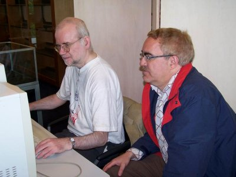

GAMBIT MATCH
The Gambit Match was played by Gert Timmerman and Mikhail Umansky from the 10th of July 2005 until the end of 2007. Six daring openings were selected.
Game 1: 1.e4 e5 2.f4 exf4
Game 2: 1.e4 e5 2.f4 and not 2...exf4
Game 3: 1.e4 e5 2.Nf3 Nc6 3.Bc4 Nf6 4.Ng5
Game 4: 1.e4 e5 2.Nf3 Nc6 3.Bc4 Nf6 4.d4
Game 5: 1.e4 e5 2.Nf3 Nc6 3.d4
Game 6: 1.e4 e5 2.Nf3 Nc6 3.Bc4 Bc5 4.b4
Umansky won the match by 3½-2½.
NIMZOWITSCH MATCH
On the 10th of July 2008 a new thematic match started between two World Champions: Gert Timmerman and Mikhail Umansky. The match consisted of six games. The opening moves were related to a great player of the past: Aaron Nimzowitsch (1886 - 1935).
This theme and the prescribed moves were chosen by the Dutch endgame expert Jan van Reek. The Tournament Director was Nol van 't Riet. The games were played according to the ICCF Webserver Rules of Play, with a reflection time of 50 days for 10 moves.
-
Game 1: 1.e3 e5
-
Game 2: 1.Nf3 d5 2.b3
-
Game 3: 1.e4 e6 2.d4 d5 3.Nc3 Bb4
-
Game 4: 1.e4 e6 2.d4 d5 3.e5 c5
-
Game 5: 1.d4 Nf6 2.c4 d6
-
Game 6: 1.d4 Nf6 2.c4 e6 3.Nc3 Bb4 4.e3 b6
-
The match had a tragic end, when Umansky died on 18 xii 2010. Unfortunately, two games were still going on after 81 moves. Arbitrage was applied. The final score became 3-3. Both players had won one game.
pgn Gambit and Nimzowitsch match games
|  | |
| Jan van Reek and Gert Jan Timmerman analyze | Mikhail Umansky |
 |
Go to home page |